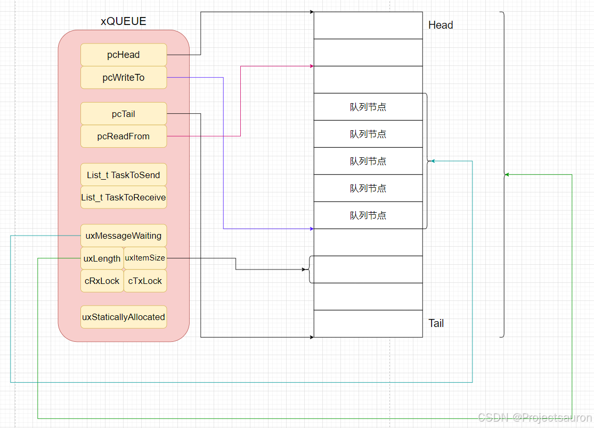

[toc]
在 FreeRTOS 快速入门（四）之队列 一文中，我简单地叙述了 FreeRTOS 中队列的工作机制和基本使用。这一节我将依据 FreeRTOS V10.4.3 的源码深入地去探究队列是如何实现的。学好队列对我们后续学习信号量等知识的时候有很大的帮助。
一、队列 1、队列结构体 队列结构体定义在目录 queue.c 下：
1 2 3 4 5 6 7 8 9 10 11 12 13 14 15 16 17 18 19 20 21 22 23 24 25 26 27 28 29 30 31 32 33 34 35 36 37 38 typedef struct QueueDefinition { int8_t * pcHead; int8_t * pcWriteTo; union { volatile UBaseType_t uxMessagesWaiting; volatile int8_t cRxLock; volatile int8_t cTxLock; #if ( ( configSUPPORT_STATIC_ALLOCATION == 1 ) && ( configSUPPORT_DYNAMIC_ALLOCATION == 1 ) ) uint8_t ucStaticallyAllocated; #endif #if ( configUSE_QUEUE_SETS == 1 ) struct QueueDefinition * pxQueueSetContainer ;#endif #if ( configUSE_TRACE_FACILITY == 1 ) uint8_t ucQueueType; #endif typedef xQUEUE Queue_t;
注意其中的 QueuePointers 类型，定义如下：
1 2 3 4 5 typedef struct QueuePointers { int8_t * pcTail; int8_t * pcReadFrom;
有关链表 List 的内容可以参考：FreeRTOS 列表 List 源码解析 。
各个成员变量的含义已经在注释中给出，下面不再赘述。
并且在 queue.h 下为其创建了新的别名供外部用户使用，也是我们所熟知的：
1 2 struct QueueDefinition ;typedef struct QueueDefinition * QueueHandle_t ;
这种在头文件中声明，而在源文件中实现定义的方式，属于 C 语言中的不完整类型。
C 语言的不完整类型和前置声明
C语言中使用不完全类型（Incomplete Types
优点：
封装性增强：使用不完全类型可以在一定程度上隐藏结构体的内部细节，防止外部代码直接访问结构体的成员，从而提高代码的封装性和安全性。
模块间解耦：通过不完全类型声明，可以在多个模块之间传递结构体的指针，而无需暴露结构体的完整定义。这有助于减少模块间的耦合度，使得系统更加灵活和易于维护。
缺点：
使用限制：不完全类型有一些使用上的限制，比如不能直接使用 sizeof 运算符来获取不完全类型的大小（因为编译器不知道其完整定义）。这可能导致在需要知道结构体大小的情况下无法使用不完全类型。
容易出错：如果在使用不完全类型时没有正确地提供其完整定义，或者在多个地方提供了不一致的定义，都可能导致编译错误或运行时错误。
通过这种方式可以很好地实现封装抽象，因为队列的具体定义对用户来说就是透明的了，不能直接的访问结构成员，只能提供相应的接口来供访问，这样做的好处显而易见，可以防止用户随意破坏模块内部的抽象数据类型。
此外，不完整类型很好地解决了头文件循环包含的问题。见下：
1 2 3 4 5 6 7 8 9 10 11 12 13 14 #include "point.h" struct circle {struct coordinate center ;#include "circle.h" struct coordinate {struct circle cir ;
如果编译这个程序，你会发现因为头文件循环包含而发生编译错误。
这个时候就可以使用前置声明轻松的解决这个问题，但是必须要使用指向不完整类型的指针了。
1 2 3 4 5 6 7 8 9 10 11 12 struct coordinate ;struct circle {struct coordinate *center ;struct circle ;struct coordinate {struct circle *cir ;
这样我们连头文件都不用包含，还可以缩短编译的时间。
2、队列类型 在文件 queue.h 下有如下定义表示队列的类型：
1 2 3 4 5 6 #define queueQUEUE_TYPE_BASE ( ( uint8_t ) 0U ) #define queueQUEUE_TYPE_SET ( ( uint8_t ) 0U ) #define queueQUEUE_TYPE_MUTEX ( ( uint8_t ) 1U ) #define queueQUEUE_TYPE_COUNTING_SEMAPHORE ( ( uint8_t ) 2U ) #define queueQUEUE_TYPE_BINARY_SEMAPHORE ( ( uint8_t ) 3U ) #define queueQUEUE_TYPE_RECURSIVE_MUTEX ( ( uint8_t ) 4U )
queueQUEUE_TYPE_BASE 即基本的消息队列，另外，信号量机制也是通过队列实现的，因此当用于互斥信号量，二值信号量等时，会标记对于的队列类型。
二、队列相关操作 1、初始化 
1.1 静态创建队列 前文中提到过，队列静态分配内存使用的是 xQueueCreateStatic() 函数，它其实是一个宏函数（在 queue.h 下）：
1 2 3 #if ( configSUPPORT_STATIC_ALLOCATION == 1 ) #define xQueueCreateStatic( uxQueueLength, uxItemSize, pucQueueStorage, pxQueueBuffer ) xQueueGenericCreateStatic( ( uxQueueLength ), ( uxItemSize ), ( pucQueueStorage ), ( pxQueueBuffer ), ( queueQUEUE_TYPE_BASE ) ) #endif
它实际上是调用了 xQueueGenericCreateStatic 函数来实现了静态初始化队列的功能。
其定义在 queue.c 下：
1 2 3 4 5 6 7 8 9 10 11 12 13 14 15 16 17 18 19 20 21 22 23 24 25 26 27 28 29 30 31 32 33 34 35 36 37 38 39 40 41 42 43 44 45 46 47 48 49 50 51 52 53 54 #if ( configSUPPORT_STATIC_ALLOCATION == 1 ) xQueueGenericCreateStatic ( const UBaseType_t uxQueueLength, const UBaseType_t uxItemSize, uint8_t * pucQueueStorage, StaticQueue_t * pxStaticQueue, const uint8_t ucQueueType ) 0 );NULL );NULL ) && ( uxItemSize == 0 ) ) );NULL ) && ( uxItemSize != 0 ) ) );#if ( configASSERT_DEFINED == 1 ) volatile size_t xSize = sizeof ( StaticQueue_t );sizeof ( Queue_t ) );void ) xSize; #endif if ( pxNewQueue != NULL )#if ( configSUPPORT_DYNAMIC_ALLOCATION == 1 ) #endif else return pxNewQueue;#endif
程序大体比较简单，容易理解，注释也已经说明了各部分代码的作用。不过有几个细节需要注意一下：
中间有一段这样的代码：
这段的作用如下：由于 xSize 变量在后续代码中没有被使用，编译器可能会发出未使用变量的警告。通过将 xSize 强制转换为 void，可以明确地告诉编译器忽略这个警告。这个技巧很常用，用于处理临时或未来可能使用的变量，但在当前代码中确实不需要它们的情况。下面举一个简单的例子：
1 2 3 4 5 6 7 8 9 10 11 void exampleFunction (int condition) {size_t xSize = 100 ;if (condition) {printf ("Size: %zu\n" , xSize);else {void ) xSize;
如果是在函数调用前面加 ( void ) 表示显式指明，程序不处理函数返回值。
最后出现的 traceQUEUE_CREATE_FAILED( ucQueueType ) 是用来检查宏是否定义：
1 2 3 4 #ifndef traceQUEUE_CREATE #define traceQUEUE_CREATE( pxNewQueue ) #endif
这段代码的主要功能是确保 traceQUEUE_CREATE_FAILED 宏在没有被定义的情况下被定义为一个空操作。这样可以避免在后续代码中使用未定义的宏，从而防止编译错误。
如果 traceQUEUE_CREATE_FAILED 宏已经被定义，那么这段代码不会做任何事情，因为 #ifndef 条件不成立。
如果 traceQUEUE_CREATE_FAILED 宏没有被定义，那么这段代码会定义它为一个空宏，即不执行任何操作。
这种做法常见于库的实现中，用于确保某些宏在用户代码中没有被重复定义，从而避免潜在的冲突和错误。这个技巧在 FreeRTOS 中使用地非常多。
而 mtCOVERAGE_TEST_MARKER() 则是定义了一个空函数，这种做法通常用于代码覆盖率测试，在需要插入标记以确保代码路径被测试到的地方使用。
1 2 3 4 #ifndef mtCOVERAGE_TEST_MARKER #define mtCOVERAGE_TEST_MARKER() #endif
1.2 动态创建队列 同理，动态创建队列的宏定义如下：
1 2 3 #if ( configSUPPORT_DYNAMIC_ALLOCATION == 1 ) #define xQueueCreate( uxQueueLength, uxItemSize ) xQueueGenericCreate( ( uxQueueLength ), ( uxItemSize ), ( queueQUEUE_TYPE_BASE ) ) #endif
现在来看 xQueueGenericCreate 的实现：
1 2 3 4 5 6 7 8 9 10 11 12 13 14 15 16 17 18 19 20 21 22 23 24 25 26 27 28 29 30 31 32 33 34 35 36 37 38 39 40 41 42 43 44 45 46 47 48 49 50 51 52 53 54 #if ( configSUPPORT_DYNAMIC_ALLOCATION == 1 ) xQueueGenericCreate ( const UBaseType_t uxQueueLength, const UBaseType_t uxItemSize, const uint8_t ucQueueType ) size_t xQueueSizeInBytes; uint8_t * pucQueueStorage; 0 );size_t ) ( uxQueueLength * uxItemSize );0 ) || ( uxQueueLength == ( xQueueSizeInBytes / uxItemSize ) ) );sizeof ( Queue_t ) + xQueueSizeInBytes ) > xQueueSizeInBytes );sizeof ( Queue_t ) + xQueueSizeInBytes ); if ( pxNewQueue != NULL )uint8_t * ) pxNewQueue;sizeof ( Queue_t ); #if ( configSUPPORT_STATIC_ALLOCATION == 1 ) #endif else return pxNewQueue;#endif
整个函数调用栈如下：
1.3 队列的初始化 在前面的代码中，我们可以看到，不论是静态创建队列还是动态创建队列，都调用了一个函数：prvInitialiseNewQueue，这个函数是用来对队列进行初始化的。下面看源码：
1 2 3 4 5 6 7 8 9 10 11 12 13 14 15 16 17 18 19 20 21 22 23 24 25 26 27 28 29 30 31 32 33 34 35 36 37 38 39 static void prvInitialiseNewQueue ( const UBaseType_t uxQueueLength, const UBaseType_t uxItemSize, uint8_t * pucQueueStorage, const uint8_t ucQueueType, Queue_t * pxNewQueue ) void ) ucQueueType; if ( uxItemSize == ( UBaseType_t ) 0 )int8_t * ) pxNewQueue;else int8_t * ) pucQueueStorage;void ) xQueueGenericReset( pxNewQueue, pdTRUE ); #if ( configUSE_TRACE_FACILITY == 1 ) #endif #if ( configUSE_QUEUE_SETS == 1 ) NULL ; #endif
整个函数调用栈如下：
1.4 队列的重置 这是本小节要讲的最后一个函数，刚才讲了 prvInitialiseNewQueue 中调用了 xQueueGenericReset 函数。这个函数是用来重置一个队列，将队列的一些属性重置，也相当于初始化了。
下面看代码：
1 2 3 4 5 6 7 8 9 10 11 12 13 14 15 16 17 18 19 20 21 22 23 24 25 26 27 28 29 30 31 32 33 34 35 36 37 38 39 40 41 42 43 44 45 46 47 48 49 50 51 52 53 54 55 56 57 58 59 BaseType_t xQueueGenericReset ( QueueHandle_t xQueue, BaseType_t xNewQueue ) const pxQueue = xQueue; 0U ; 1U ) * pxQueue->uxItemSize );if ( xNewQueue == pdFALSE )if ( listLIST_IS_EMPTY( &( pxQueue->xTasksWaitingToSend ) ) == pdFALSE )if ( xTaskRemoveFromEventList( &( pxQueue->xTasksWaitingToSend ) ) != pdFALSE )else else else return pdPASS;
整个队列创建好后的结构如下：
2、队列的发送
2.1 任务级入队函数 平时我们使用的入队 API 有：xQueueSend、xQueueSendToBack、xQueueSendToFront 本质上调用的是一个函数：xQueueGenericSend：
1 2 3 4 5 6 7 8 9 10 11 #define xQueueSendToFront( xQueue, pvItemToQueue, xTicksToWait ) \ xQueueGenericSend( ( xQueue ), ( pvItemToQueue ), ( xTicksToWait ), queueSEND_TO_FRONT ) #define xQueueSendToBack( xQueue, pvItemToQueue, xTicksToWait ) \ xQueueGenericSend( ( xQueue ), ( pvItemToQueue ), ( xTicksToWait ), queueSEND_TO_BACK ) #define xQueueSend( xQueue, pvItemToQueue, xTicksToWait ) \ xQueueGenericSend( ( xQueue ), ( pvItemToQueue ), ( xTicksToWait ), queueSEND_TO_BACK ) #define xQueueOverwrite( xQueue, pvItemToQueue ) \ xQueueGenericSend( ( xQueue ), ( pvItemToQueue ), 0, queueOVERWRITE )
插入的位置定义如下：
1 2 3 #define queueSEND_TO_BACK ( ( BaseType_t ) 0 ) #define queueSEND_TO_FRONT ( ( BaseType_t ) 1 ) #define queueOVERWRITE ( ( BaseType_t ) 2 )
下面来看 xQueueGenericSend 的实现：
出于篇幅原因，我删去了关于队列集的部分，感兴趣的可以自行查看源码
1 2 3 4 5 6 7 8 9 10 11 12 13 14 15 16 17 18 19 20 21 22 23 24 25 26 27 28 29 30 31 32 33 34 35 36 37 38 39 40 41 42 43 44 45 46 47 48 49 50 51 52 53 54 55 56 57 58 59 60 61 62 63 64 65 66 67 68 69 70 71 72 73 74 75 76 77 78 79 80 81 82 83 84 85 86 87 88 89 90 91 92 93 94 95 96 97 98 99 100 101 102 103 104 105 106 107 108 109 110 111 112 113 114 115 116 117 118 119 120 121 122 123 124 125 126 127 128 129 130 131 132 BaseType_t xQueueGenericSend ( QueueHandle_t xQueue, const void * const pvItemToQueue, TickType_t xTicksToWait, const BaseType_t xCopyPosition ) const pxQueue = xQueue; NULL ) && ( pxQueue->uxItemSize != ( UBaseType_t ) 0U ) ) );1 ) ) );#if ( ( INCLUDE_xTaskGetSchedulerState == 1 ) || ( configUSE_TIMERS == 1 ) ) 0 ) ) );#endif for ( ; ; )if ( ( pxQueue->uxMessagesWaiting < pxQueue->uxLength ) || ( xCopyPosition == queueOVERWRITE ) )if ( listLIST_IS_EMPTY( &( pxQueue->xTasksWaitingToReceive ) ) == pdFALSE )if ( xTaskRemoveFromEventList( &( pxQueue->xTasksWaitingToReceive ) ) != pdFALSE )else else if ( xYieldRequired != pdFALSE ) else return pdPASS;else if ( xTicksToWait == ( TickType_t ) 0 )return errQUEUE_FULL;else if ( xEntryTimeSet == pdFALSE )else if ( xTaskCheckForTimeOut( &xTimeOut, &xTicksToWait ) == pdFALSE )if ( prvIsQueueFull( pxQueue ) != pdFALSE )if ( xTaskResumeAll() == pdFALSE )else void ) xTaskResumeAll();else void ) xTaskResumeAll(); return errQUEUE_FULL;
2.1.1 入队函数 由上面的代码可以看出，虽然有那么长的代码，但实际上具体实现入队逻辑的是 prvCopyDataToQueue 函数：
1 2 3 4 5 6 7 8 9 10 11 12 13 14 15 16 17 18 19 20 21 22 23 24 25 26 27 28 29 30 31 32 33 34 35 36 37 38 39 40 41 42 43 44 45 46 47 48 49 50 51 52 53 54 55 56 57 58 59 60 61 62 63 64 65 66 67 68 69 70 71 72 static BaseType_t prvCopyDataToQueue ( Queue_t * const pxQueue, const void * pvItemToQueue, const BaseType_t xPosition ) if ( pxQueue->uxItemSize == ( UBaseType_t ) 0 ) else if ( xPosition == queueSEND_TO_BACK ) void ) memcpy ( ( void * ) pxQueue->pcWriteTo, pvItemToQueue, ( size_t ) pxQueue->uxItemSize );if ( pxQueue->pcWriteTo >= pxQueue->u.xQueue.pcTail ) else else void ) memcpy ( ( void * ) pxQueue->u.xQueue.pcReadFrom, pvItemToQueue, ( size_t ) pxQueue->uxItemSize ); if ( pxQueue->u.xQueue.pcReadFrom < pxQueue->pcHead )else if ( xPosition == queueOVERWRITE )if ( uxMessagesWaiting > ( UBaseType_t ) 0 )else else 1 ;return xReturn;
简单来说，具体实现逻辑如下：
如果选择后向入队 queueSEND_TO_BACK，则将消息复制到队列结构体成员 pcWriteTo 指向的队列项；复制成功以后 pcWriteTo 增加uxItemSize 个字节，指向下一个队列项目。
当选择前向入队 queueSEND_TO_FRONT 或者 quueOVERWRITE 时，则将消息复制到 u.pcReadFrom 所指向的队列项目。同样需要调整u.pcReadFrom 的位置。当向队列写入一个消息以后，队列中统计当前消息数量的成员 uxMessagesWaiting 就会加一；但是选择覆写入队queueOVERWRITE 时还会将 uxMessagesWaiting 减一，这样一减一加相当于队列当前消息数量没有变。
2.1.2 队列锁 在 xQueueGenericSend 里面出现了和队列锁有关的函数，实现如下：
1 2 3 4 5 6 7 8 9 10 11 12 13 14 15 16 17 18 19 20 21 22 23 24 25 26 27 28 29 30 31 32 33 34 35 36 37 38 39 40 41 42 43 44 45 46 47 48 49 50 51 52 53 54 55 56 57 58 59 60 61 62 63 64 65 66 67 68 69 70 71 72 73 74 75 76 77 78 79 80 81 82 83 84 85 86 87 88 89 90 91 92 93 94 95 #define prvLockQueue( pxQueue ) \ if ( ( pxQueue )->cRxLock == queueUNLOCKED ) \if ( ( pxQueue )->cTxLock == queueUNLOCKED ) \static void prvUnlockQueue ( Queue_t * const pxQueue ) int8_t cTxLock = pxQueue->cTxLock; while ( cTxLock > queueLOCKED_UNMODIFIED )if ( listLIST_IS_EMPTY( &( pxQueue->xTasksWaitingToReceive ) ) == pdFALSE )if ( xTaskRemoveFromEventList( &( pxQueue->xTasksWaitingToReceive ) ) != pdFALSE )else else break ;int8_t cRxLock = pxQueue->cRxLock; while ( cRxLock > queueLOCKED_UNMODIFIED )if ( listLIST_IS_EMPTY( &( pxQueue->xTasksWaitingToSend ) ) == pdFALSE )if ( xTaskRemoveFromEventList( &( pxQueue->xTasksWaitingToSend ) ) != pdFALSE )else else break ;
上锁的实现非常简单，而解锁是通过两个临界区分别对 Rx 和 Tx 锁进行解锁。
其中，调用了函数 vTaskMissedYield() 来完成任务切换，函数 vTaskMissedYield() 只是简单地将全局变量 xYieldPending 设置为 pdTRUE，真正的任务切换是在时钟节拍处理函数 xTaskIncrementTick() 中完成的，此函数会判断 xYieldPending 的值，从而决定是否进行任务切换。
2.1.3 portYIELD_WITHIN_API portYIELD_WITHIN_API 函数和上下文切换有关：
1 2 3 4 5 6 7 8 9 10 11 12 13 14 15 16 #ifndef portYIELD_WITHIN_API #define portYIELD_WITHIN_API portYIELD #endif #define portYIELD() \ { \ \ portNVIC_INT_CTRL_REG = portNVIC_PENDSVSET_BIT; \ \ __dsb( portSY_FULL_READ_WRITE ); \ __isb( portSY_FULL_READ_WRITE ); \ }
vPortYield 函数是 FreeRTOS 中用于请求上下文切换的关键函数，通过设置 PendSV 中断请求位并使用同步屏障确保操作的正确性。
portNVIC_INT_CTRL 是一个指向 NVIC 控制寄存器的指针。portNVIC_PENDSVSET 是一个常量，表示 PendSV 中断请求位。
__DSB() 和 __ISB() 都是编译器内置函数：
__DSB()：用于确保在执行后续指令之前，之前的所有存储器访问操作都已经完成。PendSV 中断请求位之后，所有的存储器操作都已经完成，从而避免潜在的竞态条件。__ISB()：用于刷新指令流水线，确保在执行后续指令之前，之前的所有指令都已经完成。PendSV 中断请求位之后，所有的指令都已经完成，从而避免潜在的指令乱序执行问题。
指令同步屏障（Instruction Synchronization Barrier DMB、DSB、ISB 这三个指令。在具有超标量流水线的 MCU（如 Cortex-M7 内核的stm32H743）/SoC更是经常会使用到，相对于只支持三级流水线的 Cortex-M4 在每个时钟周期只能执行一条指令，Cortex-M7 拥有六级流水线和双发射超标量架构，拥有在一个时钟周期内执行两条指令的能力。以五级指令流水线为例，其指令执行步骤如下：
取指->译码->发射->执行->写回
其中==发射和执行都是乱序的==。
超标量流水线的设计产生了乱序指为嵌入式开发带来新的问题，同时固有的编译器优化也会导致内存乱序访问。总结来说会带来以下两个问题：
memory “这个伪指令，告诉编译器不要将该指令前后代码顺序打乱。DMB、DSB、ISB 就是为了解决这一问题而引入的指令。__DMB、__DSB、__ISB 的 API 如下：
__STATIC_FORCEINLINE void __ISB(void){__ASM volatile ("isb 0xF":::"memory");}__STATIC_FORCEINLINE void __DSB(void){ __ASM volatile ("dsb 0xF":::"memory");}__STATIC_FORCEINLINE void __DMB(void){ __ASM volatile ("dmb 0xF":::"memory");}
可以看到每个指令既包含和自己相关的指令，也包含”memory “这个伪指令，这是 ARM 平台的编译屏障指令。
==DMB（Data Memory Barrier
DMB 主要用于多核处理器系统中，不同的处理器可能同时执行数据内存传输指令。DMB 指令确保在 DMB 之前的所有显式数据内存传输指令都已经在内存中读取或写入完成，同时确保任何后续的数据内存传输指令都将在DMB执行之后开始执行，否则有些数据传输指令可能会提前执行。
==DSB（Data Synchronization Barrier
在计算机的体系结构中，处理器在执行指令时通常会利用指令流水线来提高性能。但也会产生一些问题，比如在多线程编程中，两个线程同时对共享的内存进行读写操作，由于读/写操作的重排序，就会导致数据的不一致。
==ISB（Instruction Synchronization Barrier
指令的流水线允许处理器同时执行多条指令的不同阶段，然而这样并行执行可能会导致一些问题，特别是涉及到上下文切换（更改上下文操作包括 cache、TLB、分支预测等维护操作以及改变系统控制寄存器等操作）的情况，如实时操作系统的任务切换。当上下文切换时，可能指令流水线中的指令还在执行，而此时上下文已经改变，导致指令执行的结果不正确。
2.2 中断级入队函数 同理，中断级的入队函数同样是来自同一个函数：xQueueGenericSendFromISR。
1 2 3 4 5 6 7 8 9 10 11 #define xQueueSendToFrontFromISR( xQueue, pvItemToQueue, pxHigherPriorityTaskWoken ) \ xQueueGenericSendFromISR( ( xQueue ), ( pvItemToQueue ), ( pxHigherPriorityTaskWoken ), queueSEND_TO_FRONT ) #define xQueueSendToBackFromISR( xQueue, pvItemToQueue, pxHigherPriorityTaskWoken ) \ xQueueGenericSendFromISR( ( xQueue ), ( pvItemToQueue ), ( pxHigherPriorityTaskWoken ), queueSEND_TO_BACK ) #define xQueueOverwriteFromISR( xQueue, pvItemToQueue, pxHigherPriorityTaskWoken ) \ xQueueGenericSendFromISR( ( xQueue ), ( pvItemToQueue ), ( pxHigherPriorityTaskWoken ), queueOVERWRITE ) #define xQueueOverwriteFromISR( xQueue, pvItemToQueue, pxHigherPriorityTaskWoken ) \ xQueueGenericSendFromISR( ( xQueue ), ( pvItemToQueue ), ( pxHigherPriorityTaskWoken ), queueOVERWRITE )
下面看源码（同样，这里我省去了队列集的相关部分）：
1 2 3 4 5 6 7 8 9 10 11 12 13 14 15 16 17 18 19 20 21 22 23 24 25 26 27 28 29 30 31 32 33 34 35 36 37 38 39 40 41 42 43 44 45 46 47 48 49 50 51 52 53 54 55 56 57 58 59 60 61 62 63 64 65 66 67 68 69 70 71 72 73 74 75 76 77 78 79 80 81 82 83 84 85 86 87 88 89 BaseType_t xQueueGenericSendFromISR ( QueueHandle_t xQueue, const void * const pvItemToQueue, BaseType_t * const pxHigherPriorityTaskWoken, const BaseType_t xCopyPosition ) const pxQueue = xQueue; NULL ) && ( pxQueue->uxItemSize != ( UBaseType_t ) 0U ) ) );1 ) ) );if ( ( pxQueue->uxMessagesWaiting < pxQueue->uxLength ) || ( xCopyPosition == queueOVERWRITE ) )const int8_t cTxLock = pxQueue->cTxLock;const UBaseType_t uxPreviousMessagesWaiting = pxQueue->uxMessagesWaiting;void ) prvCopyDataToQueue( pxQueue, pvItemToQueue, xCopyPosition );if ( cTxLock == queueUNLOCKED )if ( listLIST_IS_EMPTY( &( pxQueue->xTasksWaitingToReceive ) ) == pdFALSE )if ( xTaskRemoveFromEventList( &( pxQueue->xTasksWaitingToReceive ) ) != pdFALSE )if ( pxHigherPriorityTaskWoken != NULL )else else else void ) uxPreviousMessagesWaiting; #endif else int8_t ) ( cTxLock + 1 );else return xReturn;
中断级入队函数和任务级入队函数大同小异，没什么可说的了。
3、任务的读取 任务的读取同样是分为任务级出队函数和中断级出队函数。
3.1 任务级出队函数 3.1.1 xQueueReceive 1 2 3 4 5 6 7 8 9 10 11 12 13 14 15 16 17 18 19 20 21 22 23 24 25 26 27 28 29 30 31 32 33 34 35 36 37 38 39 40 41 42 43 44 45 46 47 48 49 50 51 52 53 54 55 56 57 58 59 60 61 62 63 64 65 66 67 68 69 70 71 72 73 74 75 76 77 78 79 80 81 82 83 84 85 86 87 88 89 90 91 92 93 94 95 96 97 98 99 100 101 102 103 104 105 106 107 108 109 110 111 112 113 114 115 116 117 118 119 120 121 122 123 124 125 126 127 128 129 130 131 132 BaseType_t xQueueReceive ( QueueHandle_t xQueue, void * const pvBuffer, TickType_t xTicksToWait ) const pxQueue = xQueue; NULL ) && ( ( pxQueue )->uxItemSize != ( UBaseType_t ) 0U ) ) );#if ( ( INCLUDE_xTaskGetSchedulerState == 1 ) || ( configUSE_TIMERS == 1 ) ) 0 ) ) );#endif for ( ; ; )const UBaseType_t uxMessagesWaiting = pxQueue->uxMessagesWaiting;if ( uxMessagesWaiting > ( UBaseType_t ) 0 )1 ;if ( listLIST_IS_EMPTY( &( pxQueue->xTasksWaitingToSend ) ) == pdFALSE )if ( xTaskRemoveFromEventList( &( pxQueue->xTasksWaitingToSend ) ) != pdFALSE )else else return pdPASS;else if ( xTicksToWait == ( TickType_t ) 0 ) return errQUEUE_EMPTY;else if ( xEntryTimeSet == pdFALSE ) else if ( xTaskCheckForTimeOut( &xTimeOut, &xTicksToWait ) == pdFALSE )if ( prvIsQueueEmpty( pxQueue ) != pdFALSE )if ( xTaskResumeAll() == pdFALSE )else else void ) xTaskResumeAll();else void ) xTaskResumeAll();if ( prvIsQueueEmpty( pxQueue ) != pdFALSE )return errQUEUE_EMPTY;else
3.1.1.1 从队列中读取数据 在 xQueueReceive 调用了 prvCopyDataFromQueue 函数来实现从队列中读取数据，下面看其实现：
1 2 3 4 5 6 7 8 9 10 11 12 13 14 15 16 17 18 19 20 21 22 23 24 static void prvCopyDataFromQueue ( Queue_t * const pxQueue, void * const pvBuffer ) if ( pxQueue->uxItemSize != ( UBaseType_t ) 0 )if ( pxQueue->u.xQueue.pcReadFrom >= pxQueue->u.xQueue.pcTail )else void ) memcpy ( ( void * ) pvBuffer, ( void * ) pxQueue->u.xQueue.pcReadFrom, ( size_t ) pxQueue->uxItemSize );
3.1.2 xQueuePeek xQueuePeek 和 xQueueReceive 实现非常相似，无非是不将数据移出队列罢了。
1 2 3 4 5 6 7 8 9 10 11 12 13 14 15 16 17 18 19 20 21 22 23 24 25 26 27 28 29 30 31 32 33 34 35 36 37 38 39 40 41 42 43 44 45 46 47 48 49 50 51 52 53 54 55 56 57 58 59 60 61 62 63 64 65 66 67 68 69 70 71 72 73 74 75 76 77 78 79 80 81 82 83 84 85 86 87 88 89 90 91 92 93 94 95 96 97 98 99 100 101 102 103 104 105 106 107 108 109 110 111 112 113 114 115 116 117 118 119 120 121 122 123 124 125 126 127 128 129 130 131 132 133 134 135 136 137 138 139 140 141 142 BaseType_t xQueuePeek ( QueueHandle_t xQueue, void * const pvBuffer, TickType_t xTicksToWait ) int8_t * pcOriginalReadPosition; const pxQueue = xQueue; NULL ) && ( ( pxQueue )->uxItemSize != ( UBaseType_t ) 0U ) ) );#if ( ( INCLUDE_xTaskGetSchedulerState == 1 ) || ( configUSE_TIMERS == 1 ) ) 0 ) ) );#endif for ( ; ; )const UBaseType_t uxMessagesWaiting = pxQueue->uxMessagesWaiting;if ( uxMessagesWaiting > ( UBaseType_t ) 0 )if ( listLIST_IS_EMPTY( &( pxQueue->xTasksWaitingToReceive ) ) == pdFALSE )if ( xTaskRemoveFromEventList( &( pxQueue->xTasksWaitingToReceive ) ) != pdFALSE )else else return pdPASS;else if ( xTicksToWait == ( TickType_t ) 0 )return errQUEUE_EMPTY;else if ( xEntryTimeSet == pdFALSE )else if ( xTaskCheckForTimeOut( &xTimeOut, &xTicksToWait ) == pdFALSE )if ( prvIsQueueEmpty( pxQueue ) != pdFALSE )if ( xTaskResumeAll() == pdFALSE )else else void ) xTaskResumeAll();else void ) xTaskResumeAll();if ( prvIsQueueEmpty( pxQueue ) != pdFALSE )return errQUEUE_EMPTY;else
3.2 中断级出队函数 3.2.1 xQueueReceiveFromISR 1 2 3 4 5 6 7 8 9 10 11 12 13 14 15 16 17 18 19 20 21 22 23 24 25 26 27 28 29 30 31 32 33 34 35 36 37 38 39 40 41 42 43 44 45 46 47 48 49 50 51 52 53 54 55 56 57 58 59 60 61 62 63 64 65 66 67 68 69 70 71 72 73 74 75 76 77 78 79 80 81 82 83 84 BaseType_t xQueueReceiveFromISR ( QueueHandle_t xQueue, void * const pvBuffer, BaseType_t * const pxHigherPriorityTaskWoken ) const pxQueue = xQueue; NULL ) && ( pxQueue->uxItemSize != ( UBaseType_t ) 0U ) ) );const UBaseType_t uxMessagesWaiting = pxQueue->uxMessagesWaiting;if ( uxMessagesWaiting > ( UBaseType_t ) 0 )const int8_t cRxLock = pxQueue->cRxLock;1 ;if ( cRxLock == queueUNLOCKED )if ( listLIST_IS_EMPTY( &( pxQueue->xTasksWaitingToSend ) ) == pdFALSE )if ( xTaskRemoveFromEventList( &( pxQueue->xTasksWaitingToSend ) ) != pdFALSE )if ( pxHigherPriorityTaskWoken != NULL )else else else else int8_t ) ( cRxLock + 1 );else return xReturn;
3.2.2 xQueuePeekFromISR 1 2 3 4 5 6 7 8 9 10 11 12 13 14 15 16 17 18 19 20 21 22 23 24 25 26 27 28 29 30 31 32 33 34 35 36 37 38 39 40 41 42 43 44 BaseType_t xQueuePeekFromISR ( QueueHandle_t xQueue, void * const pvBuffer ) int8_t * pcOriginalReadPosition; const pxQueue = xQueue; NULL ) && ( pxQueue->uxItemSize != ( UBaseType_t ) 0U ) ) );0 ); if ( pxQueue->uxMessagesWaiting > ( UBaseType_t ) 0 )else return xReturn;
三、收尾 至此，queue.c 中大部分和队列相关的内容已经讲解完，剩下一小部分的内容像 prvIsQueueEmpty 实现非常简单，就不再细讲。